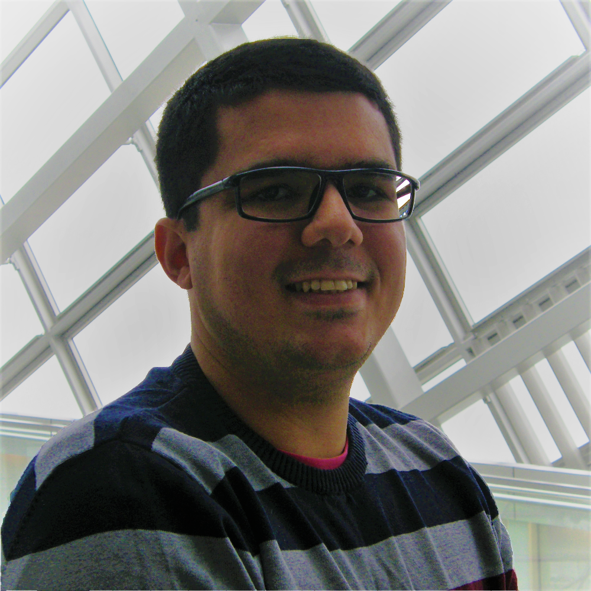

Welcome!
This website is a short presentation of my experiences involving Computing, Games and Education.
Fell free to visit my gitHub repositories and linkedIn page in order to get some additional information.
Or send me an email with your impressions, suggestions, questions etc.
I hope you enjoy it [ as much as I did ;) ]
Who I am

Computing is a way to solve problems. And that is what I like to do.
Understanding the problem, thinking about an efficient/reusable solution and implementing it is an amazing game to be played. [Yes, I do like a well structured code]
So, I like to think the formation in Computer Science as a toolbox that I want to extend by means diversified experiences.
Keep improving and learning is an objective ;) Actually, a cycle: grabbing knowledge from one project to be applied in the next one.
The challenges make us to move on. And at the end, all this stuff helps at the moment of facing them and finding a solution/innovation.
Formation
Master in Development of Video Games (Gamagora Lyon 2 - France/2018)
Bachelor in Computer Science (UFRN - Brazil/2015)